Shiogama
Shiogama · Miyagi
Shiogama
Highlighted on the Miyagi map.
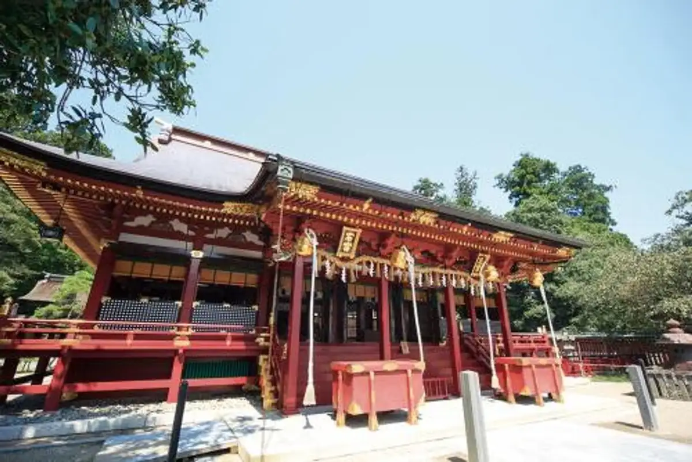
Stay
ホテルグランドパレス塩釜
Hoterugurandoparesu Shiogama
スマイルホテル塩釜
Sumairuhoteru Shiogama
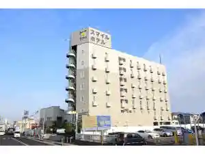
Tabist ホテル塩釜＆松島
Tabist &
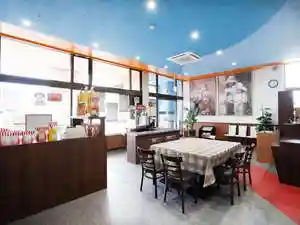
nido stay EAST WEST
nido stay EAST WEST
Dining
千松しま
Sen Matsu Shima
すし哲 本店
Sushi Satoshi Honten
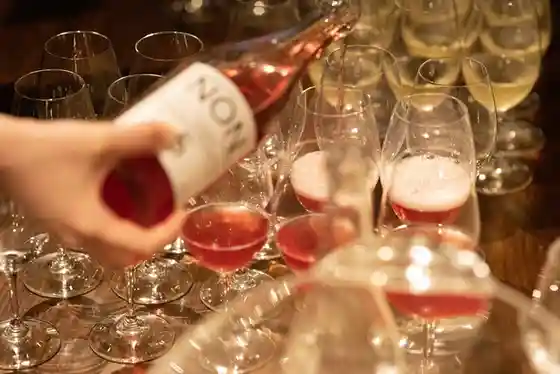
シェヌー
Shienuu
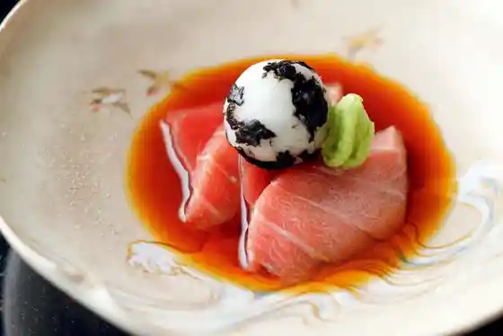
和み処 男山
Nagomi Tokoro Otokoyama
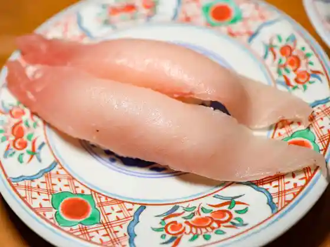
廻鮮寿司 塩釜港
Kaisen Sushi Shiogamakou
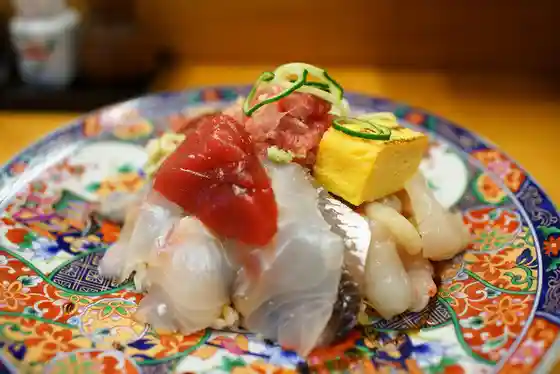
鮨 しらはた
Sushi Shirahata
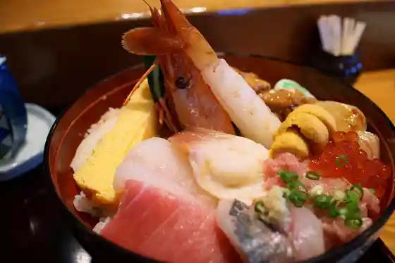
亀喜寿司
Kame Kiju Tsukasa
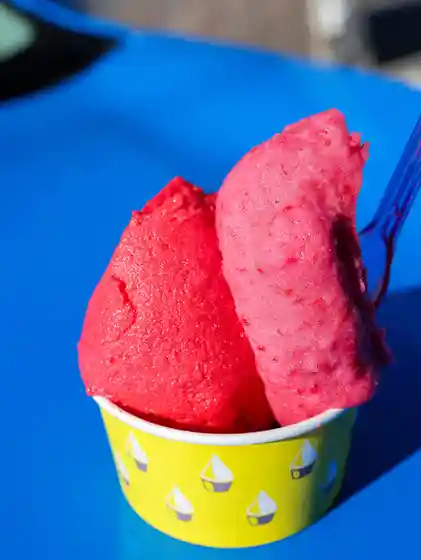
ジェラテリア フルーツラボラトリー
Jierateria Furuutsuraboratorii
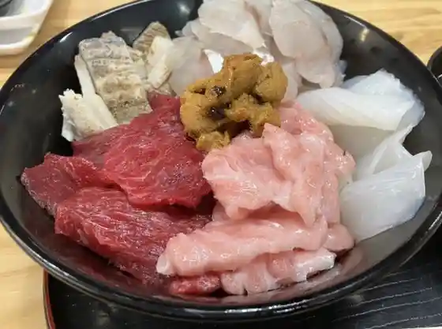
塩釜仲卸市場 マイ海鮮丼コーナー
Shiogama Nakaoroshi Shijou Mai Kaisen Donburi Koonaa
榮太楼 塩釜本店
Eita Rou Shiogama Honten
来々軒
Rairai Ken
塩竈市場食堂
Shiogama Shijou Shokudo
更科
Sarashina
まぐろ専門店 がお
Maguro Senmonten Gao
だし廊-SaKaNa-
-SaKaNa-
塩竃まぐろ直売・食堂
塩竃まぐろ直売・食堂
ブレアマリーナ
Bureamariina
間宮商店 食堂部
Mamiya Shouten Shokudo Bu
チョコレート工房 クレオバンテール
Chokoreeto Koubou Kureobanteeru
食事処 伸光
Shokuji Tokoro Nobumitsu
中華そば 蒼穹
Chuuka Soba Soukyuu
大関
Oozeki
藤まつ寿し
Fuji Matsu Hisashi Shi
さとう精肉店
Satou Seinikuten
黄金そば
Ougon Soba
加瀬 塩竈市場店
Kase Shiogama Shijou Mise
大黒寿司
Daikoku Sushi
すし徳
Sushi Toku
おそば すゞき
おそば すゞき
更科分店
Sarashina Bunten
松栄寿司
Shouei Sushi
塩釜あがらいん
Shiogama Agarain
塩釜海の駅
Shiogama Umi No Eki
コーヒーとおやつの店 アンドモア
Koohii Tooyatsuno Mise Andomoa
丸長寿司
Maru Chouju Tsukasa
一森寿司
Ichi Mori Sushi
ホルモン料理 ひょうたん
Horumon Ryouri Hyoutan
竹屋
Takeya
人と木
Nin To Ki
otomo
otomo
うなぎと竈いくら 山都
Unagito Kamado Ikura Yamato
おさんこ茶屋本店
Osanko Chaya Honten
ニラなんばんらーめん 香麺
Nira Nanbanraamen Kaori Men
カフェはれま
Kafe Harema
さぬきうどん
Sanukiudon
海鮮せんべい塩竈
Kaisen Senbei Shiogama
日乃出庵
Nichi No Shutsu Iori
しおがま庵
Shiogama Iori
間宮塩蔵 直売所
Mamiya Enzou Chokubai Tokoro
花まる弁当
Hana Maru Bentou
蕎麦 みろく
Soba Miroku
ラーメンみそ兵衛
Raamen Miso Bee
大國屋
Taikoku Ya
梅花堂 本店
Baika Dou Honten
大寿司
Dai Sushi
旬彩食房 喜三郎
Jun Sai Shoku Bou Kisaburou
京都苑
Kyouto En
となりの珈琲や
Tonarino Koohii Ya
鮨のしおがま
Sushi Noshiogama
茶屋 鹽竈
Chaya Shiogama
番長
Banchou
共栄丸水産
Kyouei Maru Suisan
丹六園
Tan Roku Sono
塩龍
Shio Ryuu
馬神
Uma Kami
ごはん屋 はれ
Gohan Ya Hare
塩釜水産物仲卸市場
Shiogama Suisanbutsu Nakaoroshi Shijou
チャリオット
Chariotto
東華
Touka
浜っ子
Hamakko
仁王寿司
Niou Sushi
シャン ド マルス・ヤマギシ
シャン ド マルス・ヤマギシ
ミヤモトたいやき店
Miyamoto Taiyaki Mise
カフェ・ル・ポール
カフェ・ル・ポール
麦の穂
Mugi No Ho
UNDERDOG COFFEE
UNDERDOG COFFEE
浦霞醸造元
Uragasumi Jouzoumoto
横山商店
Yokoyama Shouten
居酒屋ふじや
Izakaya Fujiya
割烹いな長
Kappou Ina Chou
土井精菓
Tsuchii Sei Ka
はま勢
Hama Sei
PLATHOME
PLATHOME
塩竈かき小屋 本店
Shiogama Kaki Koya Honten
太田屋もち店
Oota Ya Mochi Mise
コロラド
Kororado
稲庭うどん延寿庵
Inaniwa Udon Enju Iori
コンディメントカフェ
Kondimentokafe
中国料理 彩龍
Chuugokuryouri Sai Ryuu
すず春
Suzu Haru
ラーメンひまわり
Raamen Himawari
矢部園茶舗
Yabe Sono Chaho
MYTOWN BURGERS
MYTOWN BURGERS
SUNDA⇔LAND
SUNDALAND
とよ香kitchen
kitchen
BALON
BALON
パティスリー モンク
Pateisurii Monku
roti enak
roti enak
廣聚隆
Kou Ju Takashi
カネ彦 中村水産
Kane Hiko Nakamura Suisan
中華料理 松陽亭
Chuukaryouri Shouyou Tei
和DINING ひなた
DINING
たまご工房
Tamago Koubou
末広庵 イオンタウン塩釜SC店
Suehiro Iori Iontaun Shiogama Sc Mise
エヌワイキッチン
Enuwaikitchin
荒井商店
Arai Shouten
お弁当&クレープのお店〜たっくんち〜
O Bentou & Kureepu Noo Mise ~ Takkunchi ~
SUN BAKERY
SUN BAKERY
蒲鉾の水野
Kamaboko No Mizuno
RAMEN PIGPIG
RAMEN PIGPIG
いとう水産
Itou Suisan
末廣庵
Suehiro Iori
知味飯店
Chi Aji Hanten
焼肉ホルモン 塩竈
Yakiniku Horumon Shiogama
炭火焼鳥いたどり 塩釜駅前店
Sumibi Yakitori Itadori Shiogamaeki Mae Mise
アトリエ ゴール
Atorie Gooru
梅花堂 本町店
Baika Dou Honchou Mise
幸進丸水産
Sachi Susumu Maru Suisan
サントノーレ
Santonoore
萃萃
Sui Sui
café sai
caf sai
まさにく
Masaniku
CERES
CERES
松喜鮨
Matsu Ki Sushi
魚類組合
Gyorui Kumiai
みもざてらす
Mimozaterasu
万里樓
Banri Rou
華吹
Hana Sui
港町の鉄板焼 本塩釜店
Minatomachi No Teppanyaki Honshiogama Mise
梅果堂
Ume Ka Dou
ラスタぱん
Rasuta Pan
ナチュラルボーンスタイル
Nachuraruboonsutairu
ポエム
Poemu
食事処 和
Shokuji Tokoro Wa
肉の不二屋
Niku No Fujiya
海鮮BBQ竈
Kaisen Bbq Kamado
さくら食堂
Sakura Shokudo
Argon Brewing
Argon Brewing
塩釜dining酒場 NICHE
dining NICHE
LAWSON 塩釜桜ケ丘店
LAWSON
LAWSON 塩釜玉川一丁目店
LAWSON
太田與八郎商店
Oota Yohachirou Shouten
橋本蒲鉾店 塩釜工場
Hashimoto Kamaboko Mise Shiogama Koujou
郷土料理 味勘
Kyoudoryouri Aji Kan
元気工房 絆の館
Genki Koubou Kizuna No Kan
元祖 ニューラーメンショップ 塩釜店
Ganso Nyuuraamenshoppu Shiogama Mise
松野鮮魚店
Matsuno Sengyoten
とんかつ・中華の店 食事処 秀
とんかつ・中華の店 食事処 秀
大衆食堂 わかよし
Taishuushokudou Wakayoshi
スマイルホテル 塩釜
Sumairuhoteru Shiogama
昌腹
Masa Hara
仙塩ゴルフ倶楽部 浦霞コース
Sen'en Gorufu Kurabu Uragasumi Koosu
丸金 松岡商店
Marukin Matsuoka Shouten
さくら井そば屋
Sakura I Soba Ya
らいふ亭
Raifu Tei
飛翔
Hishou
成田屋牛焼肉とんかつ
Naritaya Ushi Yakiniku Tonkatsu
食彩庵 わたつみ
Shokusai Iori Watatsumi
塩竈本町談話室
Shiogama Honchou Danwashitsu
増友商店
Zou Tomo Shouten
カフェ ぴど
Kafe Pido
中長
Naka Chou
キタヤ餅店
Kitaya Mochi Mise
とんかつ小熊
Tonkatsu Koguma
韓国家庭料理 金さんの台所
Kankoku Kateiryouri Kin Sanno Daidokoro
ウジエスーパー 塩釜店
Ujiesuupaa Shiogama Mise
食事と喫茶 もとまち
Shokuji To Kissa Motomachi
la lieto
la lieto
居酒屋 松凪
Izakaya Matsu Nagi
肴屋ぱんだ亭
Sakanaya Panda Tei
ペンション鬼ヶ浜
Penshon Oni Ke Hama
中華そば専門 田中そば店 塩釜店
Chuuka Soba Senmon Tanaka Soba Mise Shiogama Mise
カネコ橋沼商店工場売店
Kaneko Hashi Numa Shouten Koujou Baiten
はちやの餃子直売所
Hachiyano Gyouza Chokubai Tokoro
創作たん屋 麺KOO
Sousaku Tan Ya Men Koo
和み処 花宴
Nagomi Tokoro Hana Utage
りゃん亭
Ryan Tei
宙船
Chuu Fune
相原酒店
Aihara Saketen
福寿司
Fukuju Tsukasa
ペール・ド・ノエル
ペール・ド・ノエル
ひまわり 塩釜中の島店
Himawari Shiogama Nakano Shima Mise
東一商店
Touichi Shouten
さつき
Satsuki
三浦商店
Miura Shouten
中華力
Chuuka Chikara
阿部勘酒造店
Abe Kan Shuzou Mise
ヨークベニマル 塩釜店
Yookubenimaru Shiogama Mise
ヤマザワ 塩釜中の島店
Yamazawa Shiogama Nakano Shima Mise
ZⅡ
ZII
海いろ
Umi Iro
花京院市場 JR本塩釜駅店
Kakyouin Shijou Jr Honshiogama Eki Mise
ビストロミルポア
Bisutoromirupoa
酒の餃子
Sake No Gyouza
いろは亭 塩竃店
Iroha Tei Shiogama Mise
食彩 花水木
Shokusai Kasui Ki
青い森の台所
Aoi Mori No Daidokoro
くいやがれ
Kuiyagare
神戸屋商店
Koubeya Shouten
花京院市場 イオンタウン塩釜店
Kakyouin Shijou Iontaun Shiogama Mise
カフェテリア タベルナ ヤヨイ
Kafeteria Taberuna Yayoi
orange nico
orange nico
カフェ珈琲のすゞき
カフェ珈琲のすゞき
阿部善商店
Abe Zen Shouten
里正庵
Risei Iori
ガネーシャ 塩竈店
Ganeesha Shiogama Mise
ビッグのパン屋さん 塩釜店
Biggu No Pan Ya San Shiogama Mise
焼肉味一番
Yakiniku Aji Ichiban
酒ダイニング かじきや
Sake Dainingu Kajikiya
荻原醸造
Ogiwara Jouzou
平塚商店
Hiratsuka Shouten
汐彩
Shio Sai
塩釜亭
Shiogama Tei
喜久美
Kikumi
水上商店
Suijou Shouten
やまだ屋
Yamada Ya
しおがま・まちの駅
しおがま・まちの駅
丸健 渡辺水産 仲卸市場店
Maru Takeshi Watanabe Suisan Nakaoroshi Shijou Mise
手島商店
Tejima Shouten
スーパーセンタートライアル 塩釜店
Suupaasentaatoraiaru Shiogama Mise
山小千葉商店
Yama Shou Chiba Shouten
味
Aji
ザ・ビッグ 塩釜店
ザ・ビッグ 塩釜店
ファミリーマート 塩釜尾島町店
Famiriimaato Shiogama Ojima Machi Mise
セブンイレブン 塩釜駅前通店
Sebun'irebun Shiogamaeki Mae Toori Mise
STAY SHIOGAMA CAFE
STAY SHIOGAMA CAFE
メープルガーデン
Meepurugaaden
平塚商店
Hiratsuka Shouten
中山せんべい店
Nakayama Senbei Mise
菓子屋 ハウフル
Kashiya Haufuru
ミニストップ 塩釜魚市場前店
Minisutoppu Shiogama Uoichiba Mae Mise
ビアホール塩釜館
Biahooru Shiogama Kan
橋本蒲鉾店 マリンゲート店
Hashimoto Kamaboko Mise Maringeeto Mise
フランボワーズ
Furanbowaazu
赤間水産
Akama Suisan
大山酒店
Ooyama Saketen
セブンイレブン 塩釜新富町店
Sebun'irebun Shiogama Shintomi Machi Mise
ファミリーマート 塩釜松陽台店
Famiriimaato Shiogama Shouyou Dai Mise
菓子 山嵜
Kashi Yamazaki
MARK Cafe&酒場
MARK Cafe&
山七
Yama Shichi
ウエルシア 本塩釜駅前店
Uerushia Honshiogama Ekimae Mise
無印良品 ヨークタウン塩釜舟入店
Mujirushiryouhin Yookutaun Shiogama Funairi Mise
セブンイレブン 本塩釜駅前
Sebun'irebun Honshiogama Ekimae
マクドナルド ４５号塩釜店
Makudonarudo 4 5 Gou Shiogama Mise
菓匠 榮太楼 マリンゲート塩釜店
Kashou Eita Rou Maringeeto Shiogama Mise
五光食品(株)
Go Hikari Shokuhin ( Kabu )
バハティ
Bahatei
喰い道楽 勝虫
Kui Douraku Katsumushi
OKONOMI さち
OKONOMI
いりそ
Iriso
KUKUNA DELI
KUKUNA DELI
ヨークベニマル 塩釜北浜店
Yookubenimaru Shiogama Kitahama Mise
串焼き屋 信
Kushiyaki Ya Shin
顔晴れ塩竈
Kao Hare Shiogama
呑み喰い処和楽
Nomikui Tokoro Wagaku
soulce.kitchen
soulce.kitchen
山幸 渡辺商店
Yamasachi Watanabe Shouten
そるてぃ壱番館
Sorutei Ichiban Kan
塩釜焼きそば マチャマチャ
Shiogama Yakisoba Machamacha
幟
Shi
おでん 手料理 ねこやなぎ
Oden Teryouri Nekoyanagi
まるきた
Marukita
中華そば 幸楽苑 塩釜店
Chuuka Soba Kouraku En Shiogama Mise
吉野家 ４５号線塩釜店
Yoshinoya 4 5 Gousen Shiogama Mise
サイゼリヤ イオンタウン塩釜店
Saizeriya Iontaun Shiogama Mise
魚民 本塩釜駅前店
Uotami Honshiogama Ekimae Mise
焼きたて屋 DCMホーマック塩釜店
Yaki Tate Ya Dcm Hoomakku Shiogama Mise
和風レストランまるまつ 塩釜店
Wafuu Resutoran Marumatsu Shiogama Mise
すき家 塩竈北浜店
Suki Ie Shiogama Kitahama Mise
おとうふかまぼこの直江商店
Otoufukamabokono Naoe Shouten
松島蒲鉾本舗 マリンゲート塩釜店
Matsushima Kamaboko Honpo Maringeeto Shiogama Mise
ほっともっと 塩釜駅前店
Hottomotto Shiogamaeki Mae Mise
養老乃瀧 塩釜店
Yourou No Taki Shiogama Mise
魚民 塩釜駅前店
Uotami Shiogamaeki Mae Mise
ミスタードーナツ イオンタウン塩釜ショップ
Misutaadoonatsu Iontaun Shiogama Shoppu
サーティワンアイスクリーム イオンタウン塩釜店
Saateiwan'aisukuriimu Iontaun Shiogama Mise
居酒屋 お好み横丁
Izakaya O Konomi Yokochou
ほっともっと 塩釜藤倉店
Hottomotto Shiogama Fujikura Mise
佐藤かきや
Satou Kakiya
カネ大 氏家商店
Kane Dai Ujiie Shouten
フール セック ロッシュ
Fuuru Sekku Rosshu
藤崎 塩釜店
Fujisaki Shiogama Mise
渡邉商店
Watanabe Shouten
魚藤 ふじや商店
Sakana Fuji Fujiya Shouten
セブンイレブン 庚塚店
Sebun'irebun Kou Tsuka Mise
大統領
Daitouryou
榮太楼 ヨークベニマル塩釜店
Eita Rou Yookubenimaru Shiogama Mise
工藤商店 蔵屋
Kudou Shouten Kura Ya
柴崎屋
Shibasaki Ya
ラーメン Shima
Shima
馳走菜 塩釜店
Chisou Na Shiogama Mise
呑処・海鮮焼 たわら
呑処・海鮮焼 たわら
さざなみ
Sazanami
今野商店
Konno Shouten
すしぎん
Sushigin
ニューデイズ 塩釜店
Nyuudeizu Shiogama Mise
内海商店
Utsumi Shouten
石垣商店
Ishigaki Shouten
郷古商店
Sato Ko Shouten
白松がモナカ本舗 本塩釜店
Shiramatsu Ga Monaka Honpo Honshiogama Mise
丸ヨ 高橋商店
Maru Yo Takahashi Shouten
居酒屋ろまん
Izakaya Roman
不二家 ヨークベニマル塩釜北浜店
Fujiya Yookubenimaru Shiogama Kitahama Mise
ミートショップアカイ
Miitoshoppuakai
喫茶 ポプラ
Kissa Popura
カギヤマタ 但木商店
Kagiyamata Tadaki Shouten
ヤマザキYショップ 坂総合病院店
Yamazaki Y Shoppu Saka Sougoubyouin Mise
TAVERNA GIRO
TAVERNA GIRO
日乃出 支店
Nichi No Shutsu Shiten
おとうふかまぼこの直江商店 ヨークベニマル塩釜店
Otoufukamabokono Naoe Shouten Yookubenimaru Shiogama Mise
番屋
Banya
丸和 阿部商店
Maruwa Abe Shouten
モンペリエ ヨークベニマル塩釜店
Monperie Yookubenimaru Shiogama Mise
カネイソ商店
Kaneiso Shouten
カネト 鈴喜商店
Kaneto Suzu Ki Shouten
山ヨ伊藤商店
Yama Yo Itou Shouten
おやつハウスさくら 自動販売機
Oyatsu Hausu Sakura Jidouhanbaiki
丸吉早坂商店
Maruyoshi Hayasaka Shouten
カネ内 内海水産
Kane Nai Utsumi Suisan
山平 平間商店
Yamahira Hirama Shouten
山セ 鈴木商店
Yama Se Suzuki Shouten
ストロベリーコーンズ 塩釜店
Sutoroberiikoonzu Shiogama Mise
佐々留商店
Sassa Ryuu Shouten
丸文松島汽船 塩釜本社
Maru Bun Matsushima Kisen Shiogama Honsha
カネ丸 高橋商店
Kane Maru Takahashi Shouten
丸伏 伏見商店
Maru Fuku Fushimi Shouten
ホテルグランドパレス塩釜
Hoterugurandoparesu Shiogama
石井商店
Ishii Shouten
佐藤商店
Satou Shouten
くれゑぷや
Kureepuya
中華食房 あんじょう
Chuuka Shoku Bou Anjou
松なが
Matsu Naga
ナポリの窯 塩釜店
Napori No Kama Shiogama Mise
おひるや まなお
Ohiruya Manao
Marine Gate SELECT MARKET
Marine Gate SELECT MARKET
宮城県漁業協同組合 塩釜市浦戸東部支所
Miyagiken Gyogyou Kyoudoukumiai Shiogamashi Urato Toubu Shisho
鈴忠
Suzu Tadashi
三笠商店
Mikasa Shouten
柏商店
Kashiwa Shouten
すずまさ商店
Suzumasa Shouten
宮城商事 塩釜水産物仲卸市場店
Miyagi Shouji Shiogama Suisanbutsu Nakaoroshi Shijou Mise
ヤマス
Yamasu
NEKO竈
NEKO
花
Hana
かめちゃん
Kamechan
居酒屋 爺
Izakaya Jii
不二家 ヤマザワ塩釜中の島店
Fujiya Yamazawa Shiogama Nakano Shima Mise
釣りキチの基地
Tsuri Kichi No Kichi
スターボード
Sutaaboodo
こけし
Kokeshi
シャガール
Shagaaru
吉野鮨
Yoshino Sushi
五万石
Goman Ishi
呂久兵衛
Roku Bee
アイランズコート 蒸し料理 セイロヤ
Airanzukooto Mushi Ryouri Seiroya
KAIJIN
KAIJIN
栄福
Eifuku
プランタン
Purantan
couleur shiogama
couleur shiogama
紫園
Murasaki Sono
マルシェ食堂
Marushie Shokudo
スナックモナ
Sunakkumona
不二家 ヨークベニマル塩釜店
Fujiya Yookubenimaru Shiogama Mise
塩釜甚句
Shiogama Jinku
松乃家
Matsuno Ie
外川屋
Togawa Ya
SARAI
SARAI
セブンイレブン 塩釜泉沢店
Sebun'irebun Shiogama Izumisawa Mise
カワチ薬品 塩がま店
Kawachi Yakuhin Shio Gama Mise
和音
Waon
旨処 笹
Mune Tokoro Sasa
勝美
Katsumi
不二家 みやぎ生協塩釜栄町店
Fujiya Miyagi Seikyou Shiogama Sakaemachi Mise
酔い処白萩
Yoi Tokoro Shirohagi
リッチ＆ユー
Ritchi & Yuu
吉田商店
Yoshida Shouten
居酒屋なすび
Izakaya Nasubi
オリーブ
Oriibu
館
Kan
頓珍漢
Tonchinkan
ビッグエコー 塩釜店
Bigguekoo Shiogama Mise
おさだ
Osada
都川
Miyakogawa
Chez Nous
Chez Nous
Trattoria Blair Marina
Trattoria Blair Marina
Pizzeria La Gita
Pizzeria La Gita
Charcoal Grilled Meat Restaurant Gura
Charcoal Grilled Meat Restaurant Gura
Japanese Restaurant Shinko
Japanese Restaurant Shinko
Yabe En Chapo
Yabe En Chapo
Doi Seika
Doi Seika
Takeda No Sasa Kamaboko
Takeda No Sasa Kamaboko
Chinese Cuisine Nio Zushi
Chinese Cuisine Nio Zushi
Gelateria Fruits Laboratory
Gelateria Fruits Laboratory
Kyoei Marusuisan
Kyoei Marusuisan
Jidorito Kisetsu Ryori Furaibo
Jidorito Kisetsu Ryori Furaibo
Saint Honore Pastry
Saint Honore Pastry
Sushi Shiogama
Sushi Shiogama
Jikasei Mentorisoba Ichimura
Jikasei Mentorisoba Ichimura
Colorado
Colorado
Bistro Mirepoix
Bistro Mirepoix
Rissuisha
Rissuisha
Chinese Cuisine Sairyu
Chinese Cuisine Sairyu
Takoppe
Takoppe
Wakayoshi Shokudo
Wakayoshi Shokudo
Kyotoen
Kyotoen
Odaka Pastry
Odaka Pastry
Florence
Florence
Petit Trianon Shiogama
Petit Trianon Shiogama
Junikagetsu
Junikagetsu
Shunmai
Shunmai
Chinese Restaurant Riki
Chinese Restaurant Riki
Kirikabu
Kirikabu
Blair Mangiare
Blair Mangiare
Biaju
Biaju
Dolce
Dolce
Sokyu
Sokyu
Tasei Fish Store Tekute Honshiogama
Tasei Fish Store Tekute Honshiogama
Yoro Notaki Shiogama
Yoro Notaki Shiogama
Honkakuchukaryori Koshuryu
Honkakuchukaryori Koshuryu
Shoyotei
Shoyotei
Sushi Seafood Restaurant Yuki
Sushi Seafood Restaurant Yuki
Uosakaba
Uosakaba
Heirokuzushi Miyagi Shiogama Suginoiri
Heirokuzushi Miyagi Shiogama Suginoiri
Homemade Dumplings Ajino Takumi
Homemade Dumplings Ajino Takumi
Chimi Hanten
Chimi Hanten
Uratoya
Uratoya
Kyodo Dining Mikan
Kyodo Dining Mikan
Hinodean
Hinodean
Cafe Darts Niche
Cafe Darts Niche
Horaku Chuka Saien
Horaku Chuka Saien
Kikusen Sushi
Kikusen Sushi
Misago Sushi
Misago Sushi
Daikoku Sushi
Daikoku Sushi
Miharu Tei
Miharu Tei
Nio Sushi Shimizusawa
Nio Sushi Shimizusawa
Fuku Sushi
Fuku Sushi
Sanrikumae Sushi Gin
Sanrikumae Sushi Gin
Coba
Coba
Yutoriro
Yutoriro
Chiba Seika
Chiba Seika
Buaiso
Buaiso
Pub Dion
Pub Dion
Chopin
Chopin
Shirokujichu Aeon Shiogama
Shirokujichu Aeon Shiogama
Teryori Kikuchi
Teryori Kikuchi
Jirocho
Jirocho
One Heart
One Heart
The Terrace Hatera
The Terrace Hatera
Hatchan
Hatchan
Yabuya
Yabuya
Kogane Soba
Kogane Soba
Gyoza to Ramen Menichi
Gyoza to Ramen Menichi
Ippiki Shokudo
Ippiki Shokudo
Shin Yakitori Ya
Shin Yakitori Ya
Don Don
Don Don
Bar Steave
Bar Steave
Yakko
Yakko
Cafe Pid
Cafe Pid
Fukagawa Shokudo
Fukagawa Shokudo
Aguri
Aguri
Lounge Pub Believe
Lounge Pub Believe
Salon Deteatime
Salon Deteatime
Hama Ya Shokudo
Hama Ya Shokudo
Tachibana Shokudo
Tachibana Shokudo
Yanagioden Ya
Yanagioden Ya
Fukuharu Dininig
Fukuharu Dininig
Hinode Branch
Hinode Branch
Life Tei
Life Tei
Jonetsu SHokudo Shiogama
Jonetsu SHokudo Shiogama
Jonetsu Shokudo Tsubame the Wing
Jonetsu Shokudo Tsubame the Wing
Menya Don
Menya Don
Wagaya
Wagaya
Kogetsu Dining
Kogetsu Dining
E Bar
E Bar
Yukii
Yukii
Chagall
Chagall
Purity
Purity
Too
Too
Yakanhiko
Yakanhiko
Michikusa
Michikusa
Numberone
Numberone
Izakaya Dontei
Izakaya Dontei
Ichimura
Ichimura
Oshu Gyutan Dining
Oshu Gyutan Dining
Tea Rose
Tea Rose
Abu
Abu
Home Cooking Restaurant Misuzu
Home Cooking Restaurant Misuzu
Rinzen
Rinzen
Hige Oyaji
Hige Oyaji
Sobakan
Sobakan
Rinrin
Rinrin
Oshinchan
Oshinchan
Kuri No Sato
Kuri No Sato
Robata Kushiro
Robata Kushiro
Shichifuku Marin
Shichifuku Marin
Izakaya Shin
Izakaya Shin
Yoro No Taki Shiogame Ekimae
Yoro No Taki Shiogame Ekimae
Tampopo
Tampopo
Pecora
Pecora
Angel
Angel
Izakaya Bancho
Izakaya Bancho
Kaen
Kaen
Waraku Izakaya
Waraku Izakaya
Izakaya Gukkochan
Izakaya Gukkochan
Tana Gokoro
Tana Gokoro
Izakaya Tsukako Chan
Izakaya Tsukako Chan
Shippo
Shippo
Sakaiya
Sakaiya
Izakku Ogachi
Izakku Ogachi
Bar Contigo
Bar Contigo
Kakashitei
Kakashitei
Eitaro York Benimaru Shiogama
Eitaro York Benimaru Shiogama
Lis Blanc Pastry
Lis Blanc Pastry
Goshimaya
Goshimaya
Champ de Mars Yamagishi
Champ de Mars Yamagishi
Makoron Ya Nishimachi
Makoron Ya Nishimachi
Sable
Sable
Ota Yohachiro Shoten
Ota Yohachiro Shoten
Tiffany Fujikura
Tiffany Fujikura
Hoshi Bread
Hoshi Bread
Bakery Farine Shiogama Sakae Cho
Bakery Farine Shiogama Sakae Cho
Izakaya Warabi
Izakaya Warabi
Tin Spring Dininig Room
Tin Spring Dininig Room
Pine for It
Pine for It
Patisserie Monk
Patisserie Monk
Restaurant Florence
Restaurant Florence
Flower Irregularity
Flower Irregularity
Mondo
Mondo
Fujinami
Fujinami
Izakaya Suiren
Izakaya Suiren
Ajidokorotonton
Ajidokorotonton
Izakaya Roman
Izakaya Roman
Izakaya Tsukasa
Izakaya Tsukasa
Beer Hall Shiogamakan
Beer Hall Shiogamakan
Yakata
Yakata
Izakaya Matsuri
Izakaya Matsuri
Isoya
Isoya
Akachochin Tomitaya
Akachochin Tomitaya
Kabosharu
Kabosharu
Liquor and Food Store Atmospheric Mr
Liquor and Food Store Atmospheric Mr
Shun Irodori Heart
Shun Irodori Heart
Bistro Pa Pa
Bistro Pa Pa
Ramen Hiko
Ramen Hiko
Fugetsu
Fugetsu
Daikokuya Soba
Daikokuya Soba
Siala
Siala
Baby Girl
Baby Girl
Snack Azusa
Snack Azusa
Shofuku
Shofuku
Kitchentomato
Kitchentomato
Hinode Asahimachi
Hinode Asahimachi
Shop
Shiogama Fish Market
City wholesale fish market in Shinohama for fresh catch and processed seafood
Shiogama Seafood Intermediate Market
Intermediate seafood market stalls beside the city fish market
Sights
Shiogama Shrine
Major vermilion shrine complex on Ichinomori hill overlooking the port city
Marine Gate Shiogama
Minato Oasis complex with shops, restaurants, and Matsushima cruise departures
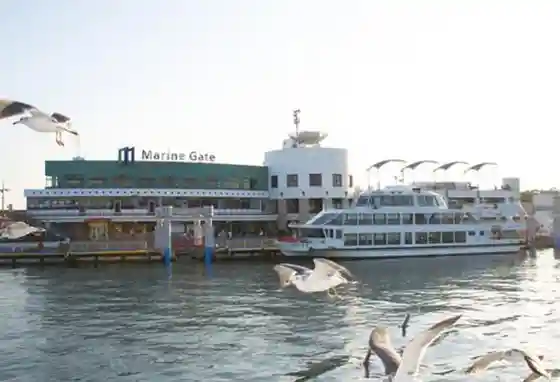
Forest Adventure Shiogama
Tree-top adventure course inside Ihoishi Park
Urato Katsurashima Beach
Island beach in the Urato Islands reachable by city ferry
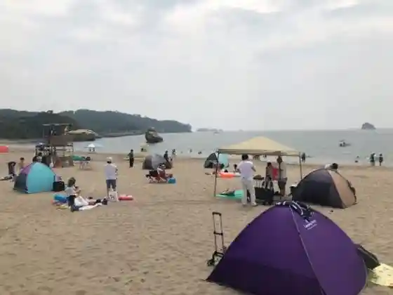
Sugimura Jun Art Museum
Municipal art museum dedicated to painter Sugimura Jun
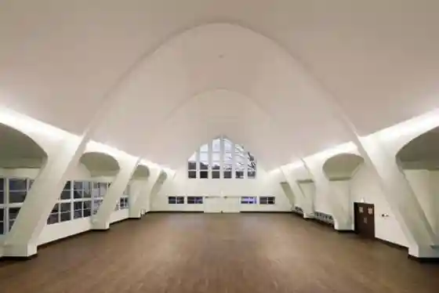
Former Kamei Residence
Preserved historic residence open as a cultural property
Naoe Shop
Local specialty maker in Kitahama
Takeda Sasakamaboko Factory
Sasakamaboko maker headquarters and factory in Minato-cho
Urato Danbekko Boat & Canoe
Island boat and canoe experiences from Nonoshima
Shiogama Cherry Natural Monument
Named Shiogama cherry trees designated as a natural monument
Shiogama Minato Festival
Summer port festival with traditional boat processions
Shiogama Shrine Annual Festival
Main annual shrine festival at Shiogama Jinja